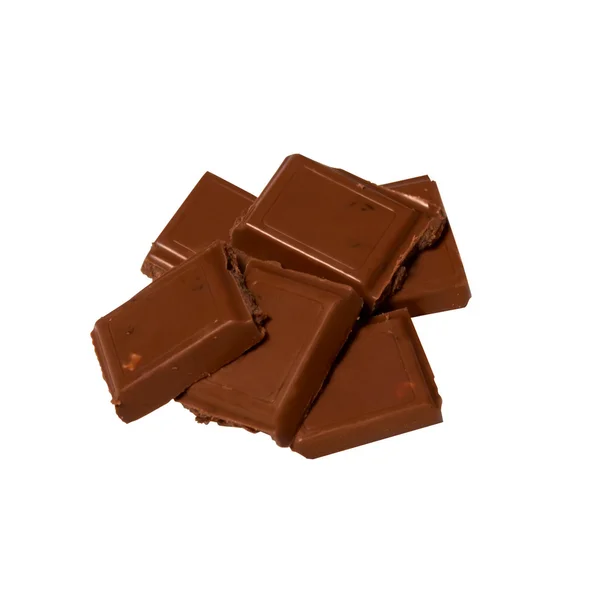

Çikolatalı ve şam fıstıklı tadımlık lezzettler... Yalnızca 4 malzeme ile hazırlanan Çikolata küpleri, renkli kağıtlarda veya kürdan batırılarak servis edilir. Özellikle kalabalık sofralarda yer verilen çikolata küpleri, doğum günü gibi özel etkinliklerde subulabilir.
Tarif: muhammed taha bulut
Çikolata küpleri tarifi içim malzemeler..
- 350 gram bitter çikolata
- 150 ml krema
- 1 çorba kaşığı tereyağı
- 150 gr şamfıstık (badem veya fındık olabilir)
Çikolata küpleri nasıl yapılır?
- Bitter çikolatayı benmari usulü eritin
- Eriyen çikolatanın üstüne krema veya tereyağı ekleyip iyice karıştırıp tenceri bir tezgahın üstüne alın.
- Şamfıstığını havanda çok az dövüp irili ufaklı parçalara bölün
- Ufalanan fıstıkları çikolatalı karışıma ekleyip karıştırın
- Hazırladığınız çikolatayı varsa alüminyum hazır bir kare tepsiye yoksa kenarlarından taşarak yağlı kağıt yerleştirdiğimiz küçük bir tepsiye dökün.
- Buzdolabında iki saat bekletin.
- Çikolatayı kalıptan çıkartarak kare parçalara bölün

...AFİYET OLSUN...